| Aaron's Archery Appendages. |  Armour salesman Armour salesman | Hemenster | 8 |
| Aemad's Adventuring Supplies. |  Aemad, Aemad,  Kortan Kortan | Zoo | 9 |
| Al-Kharid General Store |  Shop keeper, Shop keeper,  Shop assistant Shop assistant | Shantay Pass, Toll Gate | 7 |
| Ardougne Baker's Stall. |  Baker Baker | Zoo | 3 |
| Ardougne Fur Stall. |  Fur trader Fur trader | Necromancer | 2 |
| Ardougne Gem Stall. |  Gem merchant Gem merchant | Necromancer | 4 |
| Ardougne Silver Stall. |  Silver merchant Silver merchant | Zoo | 3 |
| Ardougne Spice Stall. |  Spice seller Spice seller | Zoo | 1 |
| Arhein Store |  Arhein Arhein | Catherby | 9 |
| Armoury |  Shop keeper Shop keeper | Combat Training Camp | 20 |
| Aubury's Rune Shop. | Aubury | Palace | 8 |
| Authentic throwing weapons. |  Tribal Weapon Salesman Tribal Weapon Salesman | Hemenster | 12 |
| Bandit Duty Free | 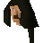 Noterazzo | Bandit Camp | 7 |
| Barkers' Habidashery |  Barker Barker | Canifis | 30 |
| Bedabin Village Bartering |  Bedabin Nomad Bedabin Nomad | Bedabin Camp | 6 |
| Betty's Magic Emporium. | Betty | Rimmington | 11 |
| Blurberry Bar |  Barman Barman | Grand Tree, Swamp | 7 |
| Bob's Brilliant Axes. |  Bob Bob | Lumbridge Swamp | 7 |
| Bolkoy's Village Shop |  Bolkoy Bolkoy | Tree Gnome Village | 10 |
| Brian's Battleaxe Bazaar. |  Brian Brian | Port Sarim | 6 |
| Burthorpe Supplies | 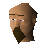 Wistan | Chaos Temple | 7 |
| Candle Shop |  Candle maker Candle maker | Catherby | 1 |
| Cassies' Shield Shop. |  Cassie Cassie | Park | 8 |
| Dal's General Ogre Supplies |  Ogre trader Ogre trader | Gu'Tanoth | 7 |
| Dargaud's Bow and Arrows. |  Bow and Arrow salesman Bow and Arrow salesman | Hemenster | 19 |
| Davon's Amulet Store. |  Davon Davon | Agility Arena | 5 |
| Diango's Toy Store |  Diango Diango | Market | 4 |
| Dommiks Crafting Store. |  Dommik Dommik | Toll Gate | 8 |
| Drogo's Mining Emporium. |  Drogo dwarf Drogo dwarf | Dwarven Mine (underground) | 9 |
| Dwarven shopping store |  Dwarf Dwarf | Dwarven Mine (underground) | 7 |
| Edgeville General Store |  Shop keeper, Shop keeper,  Shop assistant Shop assistant | Monastery | 7 |
| Falador General Store |  Shop keeper, Shop keeper,  Shop assistant Shop assistant | White Knights' Castle | 7 |
| Fancy Clothes Store |  Fancy dress shop owner Fancy dress shop owner | Dig Site | 17 |
| Fernahai's Fishing Hut. | 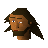 Fernahei | Shilo Village | 7 |
| Fine Fashions |  Rometti Rometti | Grand Tree | 20 |
| Fishing Guild Shop. |  Roachey Roachey | Fishing Guild | 14 |
| Flynn's Mace Market. |  Flynn Flynn | White Knights' Castle | 5 |
| Food Store |  Wydin Wydin | Rimmington | 11 |
| Frenita's Cookery Shop. | Frenita | Wizards' Guild | 10 |
| Frincos Fabulous Herb Store. |  Frincos Frincos | Fishing Platform | 3 |
| Funch's Fine Groceries |  Heckel Funch Heckel Funch | Grand Tree | 17 |
| Gaius' Two Handed Shop. | 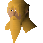 Gaius | Taverly | 6 |
| Gem Trader. |  Gem trader Gem trader | Toll Gate | 8 |
| General Store |  Fidelio Fidelio | Canifis | 8 |
| Gerrant's Fishy Business. | 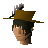 Gerrant | Rimmington | 17 |
| Gianne's Restaurant |  Gnome Waiter Gnome Waiter | Grand Tree | 13 |
| Grand Tree Groceries |  Hudo Hudo | Grand Tree | 21 |
| Grud's Herblore Stall. |  Ogre merchant Ogre merchant | Gu'Tanoth | 3 |
| Grum's Gold Exchange. |  Grum Grum | Rimmington | 15 |
| Gulluck and Sons |  Gulluck Gulluck | Grand Tree | 21 |
| Happy Heroes' Hemporium. | Helemos | Heros' Guild | 2 |
| Harrys Fishing Shop. |  Harry Harry | Catherby | 17 |
| Helmet Shop. |  Peksa Peksa | Barbarian Village | 10 |
| Herquin's Gems. |  Herquin Herquin | White Knights' Castle | 8 |
| Hicktons Archery Emporium. |  Hickton Hickton | Catherby | 20 |
| Horvik's Armour Shop. |  Horvik Horvik | Varrock | 12 |
| Jatix's Herblore Shop. |  Jatix Jatix | Taverly | 3 |
| Jiminua's Jungle Store. |  Jiminua Jiminua | Tai Bwo Wannai | 25 |
| Karamja General Store |  Shop keeper, Shop keeper,  Shop assistant Shop assistant | Rimmington | 7 |
| Karamja Wines, Spirits, and Beers. |  Zambo Zambo | Rimmington | 3 |
| Khazard General Store |  Shop keeper Shop keeper | Fight Arena, Port Khazard | 12 |
| Legends Guild General Store. |  Fionella Fionella | Legends Guild | 4 |
| Legends Guild Shop of Useful Items. |  Siegfried Erkle Siegfried Erkle | Legends Guild | 6 |
| Louies' Armoured Legs Bazaar. |  Louie legs Louie legs | Shantay Pass | 6 |
| Lowe's Archery Emporium | 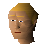 Lowe | Varrock | 9 |
| Lumbridge General Store |  Shop keeper, Shop keeper,  Shop assistant Shop assistant | Lumbridge | 8 |
| Lundail's Arena-side Rune Shop. | Lundail | | 11 |
| Mage Arena Staffs. | 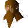 Chamber guardian | | 3 |
| Magic Guild Store |  Magic Store owner Magic Store owner | Wizards' Guild | 17 |
| Multi cannon parts for sale: |  Nulodion Nulodion | Dwarven Mine | 6 |
| Nurmof's Pickaxe Shop. |  Nurmof Nurmof | Dwarven Mine (underground) | 6 |
| Obli's General Store. |  Obli Obli | Kharazi Jungle | 23 |
| Ranael's Super Skirt Store. |  Ranael Ranael | Shantay Pass | 6 |
| Rimmington General Store |  Shop keeper, Shop keeper,  Shop assistant Shop assistant | Rimmington | 7 |
| Rommiks Crafty Supplies. | 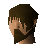 Rommik | Rimmington | 8 |
| Rufus' Meat Emporium |  Rufus Rufus | Canifis | 8 |
| Scavvo's Rune Store. |  Scavvo Scavvo | River Lum | 9 |
| Shantay Pass Shop |  Shantay Shantay | Shantay Pass | 16 |
| Shop of Distaste | 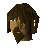 Fadli | Duel Arena | 1 |
| The Shrimp and Parrot |  Alfonse the waiter Alfonse the waiter | Agility Arena | 5 |
| The Toad and Chicken |  Tostig Tostig | Burthorpe | 3 |
| Thessalia Fine Clothes. |  Thessalia Thessalia | Varrock | 12 |
| Tony's Pizza Bases | Fat tony | Bandit Camp | 1 |
| Valaine's Shop of Champions. |  Valaine Valaine | River Lum | 4 |
| Varrock General Store | Shop keeper, 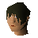 Shop assistant | Varrock | 7 |
| Varrock Swordshop. | 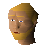 Shop keeper, 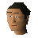 Shop assistant | River Lum | 18 |
| Wayne's Chains! - Chainmail specialist. |  Wayne Wayne | White Knights' Castle | 6 |
| West Ardougne General Store |  chadwell chadwell | Underground Pass | 13 |
| Ye Olde Tea Shoppe | 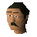 Tea seller | Palace | 1 |
| Zanaris General Store |  Fairy shop keeper, Fairy shop keeper,  Fairy shop assistant Fairy shop assistant | Wizards' Tower (underground) | 7 |
| Zeke's Superior Scimitars. |  Zeke Zeke | Toll Gate | 4 |
| Zenesha's Plate Mail Body Shop. |  Zenesha Zenesha | Zoo | 5 |
| irksol |  Irksol Irksol | Toll Gate (underground) | 1 |
| jakut |  Jakut Jakut | Lumbridge Swamp (underground) | 2 |
| oziach |  Oziach Oziach | Monastery | 2 |